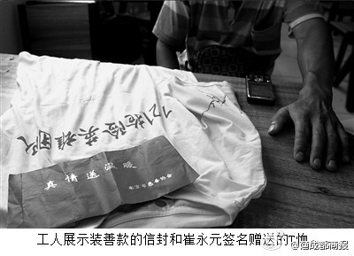
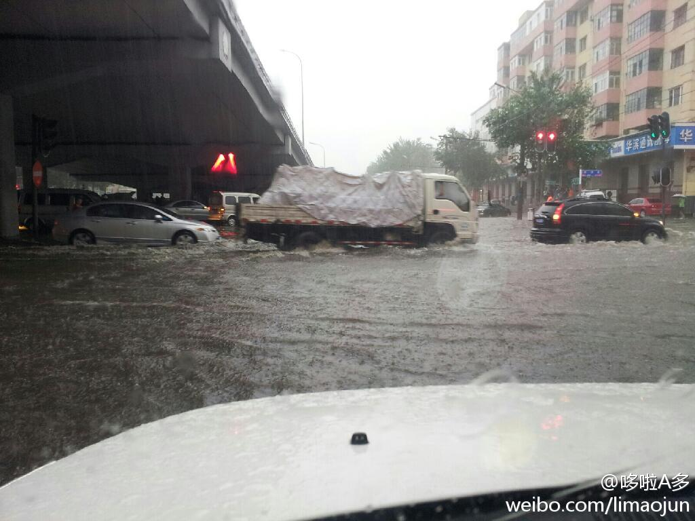

工地现在都干红十字会的活儿了？@成都商报:【农民工救人获赠45万善款却被没收】京港澳高速暴雨中受灾严重，152名农民工救出百名被困游客。李春平和腾讯筑德基金先后提供30.4万和15万赠款，崔永元请吃饭，韩红发T恤等。 然而，工地却扣这笔钱，发放的毛巾也收了，并称为留住人月底将发放。不满该做法瓦工还遭辞退。南都网页链接 
回复@_毛线球:有没有更能赞美我的方式？ //@_毛线球:国家的好栋梁、为了能为广大的公众现场直播哈市暴雨情况，不惜抛皮鞋洒热血。@李多多:和兴河，清滨河交汇处，205.60.r16轮胎没过一大半 